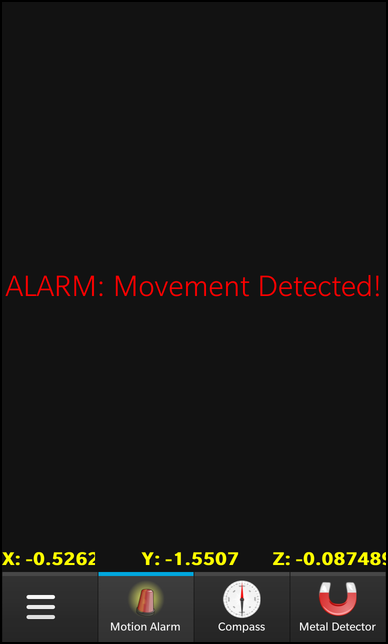
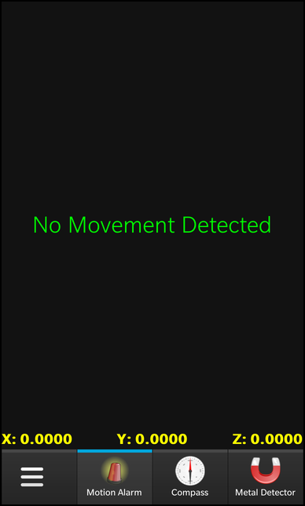
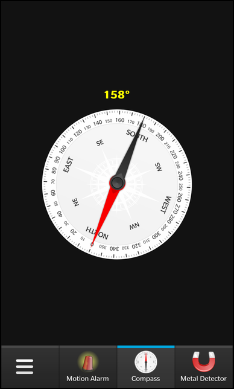
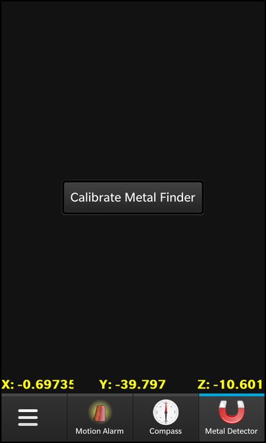
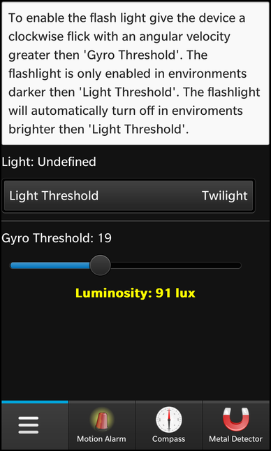
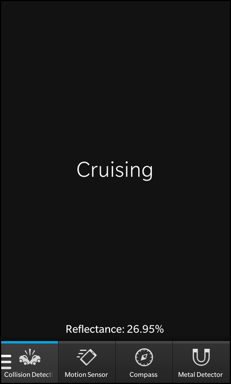
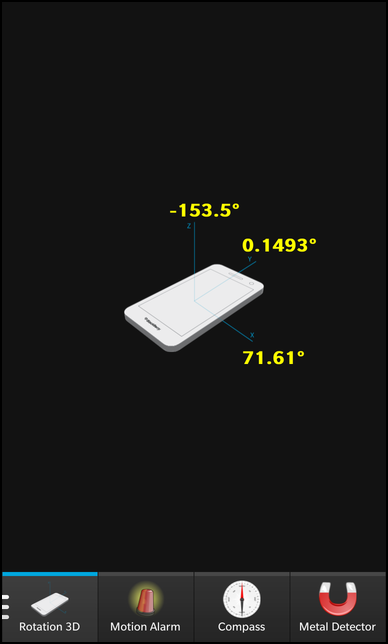

Files:
The Sensor Demo example is a collection of pages where each page demonstrate how to retrieve and process data from a certain hardware sensor.

In this example we'll learn how to use the most of the available sensors of the BB10 framework. We'll retrieve data, process them and visualize them in various ways.
The UI of this sample application consists of six pages, all located in a TabbedPane. Each page covers the usage of a certain sensor or a combination of sensors to fulfill a specific task.
Tab { id: alarmTab title: qsTr("Motion Sensor") imageSource: "images/alarm.png" Page { ControlDelegate { source: "motionalarm.qml" delegateActive: (tabPane.activeTab == alarmTab) } } }
Each Tab has an ID, a title and an icon assigned. To keep the memory footprint of the application low, we load the content of the single tab on demand whenever a tab is activated and unload the content when the tab is hidden again. For this purpose we use the ControlDelegate which allows us to load/unload a Control on-the-fly by modifying the 'delegateActive' property. As loading condition we check whether this tab is the active tab of the TabbedPane.
onCreationCompleted: { OrientationSupport.supportedDisplayOrientation = SupportedDisplayOrientation.All; tabPane.activeTab = compassTab; }
After the UI has been loaded completely, the supported orientations of the OrientationSupport object is set to 'All' to allow the application to react on device rotations.

The first page, which is implemented in 'motionalarm.qml', demonstrats how the Accelerometer sensor can be used to show a warning whenever the user moves the device in any direction.
attachedObjects: [ SystemSound { id: sound sound: SystemSound.InputKeypress }, Accelerometer { id: alarm // Create variables to hold movement state and reading values property double x: 0 property double y: 0 property double z: 0 property bool movement: false // Turn on the sensor active: true // Don't change sensor axis on screen rotation axesOrientationMode: Accelerometer.FixedOrientation // Remove gravity, only interested in user movement accelerationMode: Accelerometer.User // Keep the sensor active when the app isn't visible or the screen is off (requires app permission in bar-descriptor) alwaysOn: true // If the device isn't moving (x&y&z==0), don't send updates, saves power skipDuplicates: true onReadingChanged: { // Called when a new user accel reading is available x = reading.x; y = reading.y; z = reading.z; movement = Math.sqrt(reading.x * reading.x + reading.y * reading.y + reading.z * reading.z) > .2; if (movement) { sound.play(); // Movement detected, play a sound } } } ]
The page contains a SystemSound object and the Accelerometer object as attached objects. The Accelerometer emits the readingChanged() signal whenever new sensor values are available. In the signal handler 'onReadingChanged' we store the coordinate values of the reading in custom properties (x, y and z) and test whether this vector has a length larger than 0.2. If that's the case we declare it as a movement and play a sound. In any case we update the 'movement' property.
Label { horizontalAlignment: HorizontalAlignment.Center verticalAlignment: VerticalAlignment.Center text: alarm.movement ? qsTr("ALARM: Movement Detected!") : qsTr("No Movement Detected") textStyle { base: SystemDefaults.TextStyles.TitleText color: alarm.movement ? Color.Red : Color.White } }
The custom 'movement' property of the Accelerator object is used by a Label on this page to show a warning (when moved) or a normal text. The color of the text depends on the 'movement' property as well.
Label { layoutProperties: StackLayoutProperties { spaceQuota: 1 } text: qsTr("X: %1").arg((alarm.x).toPrecision(5)) textStyle { base: SystemDefaults.TextStyles.BodyText color: Color.White } }
There are three additional Labels which show the x, y and z values of the current reading.

The second page, which is implemented in 'compass.qml', demonstrats how the Compass sensor can be used to implement a compass rose. Since the sensor data depend on the current orientation of the device, we use the OrientationHandler and OrientationSensor classes as well to implement a proper behavior.
attachedObjects: [ OrientationHandler { onOrientationAboutToChange: { // Callend whenever the screen orientation changes // Adapt the compass to current screen orientation if (displayDirection == DisplayDirection.North) { compass.userOrientation = 0; } else if (displayDirection == DisplayDirection.South) { compass.userOrientation = 180; } else if (displayDirection == DisplayDirection.East) { compass.userOrientation = 270; } else if (displayDirection == DisplayDirection.West) { compass.userOrientation = 90; } } }, Compass { id: compass // Create a variable to hold azimuth property double azimuth: 0 // Turn on the sensor active: true // Change sensor axis depending on 'userOrientation' property axesOrientationMode: Compass.UserOrientation onReadingChanged: { // Called when a new compass reading is available compass.azimuth = reading.azimuth; } }, OrientationSensor { id: orientation // Create a variable to hold orientation property bool face_down: false // Turn on the sensor active: true onReadingChanged: { // Called when a new orientation reading is available face_down = (reading.orientation == OrientationReading.FaceDown); } } ]
All three objects are created as attached objects to the page. Since we set the 'axesOrientationMode' of the Compass to 'UserOrientation', we have to update its 'userOrientation' property manually. We could have set it to 'AutomaticOrientation' instead, then the Compass would adapt the axes orientation internally, but we do it manually here to show how it can be done.
The Compass object has a custom property 'azimuth' where the azimuth value of the last compass reading is stored in.
The OrientationSensor has also a custom property which stores whether the sensor detected that the device is hold face down.
Label { horizontalAlignment: HorizontalAlignment.Center text: qsTr("%1\u00B0").arg(compass.azimuth.toFixed()) textStyle { base: SystemDefaults.TextStyles.BodyText color: Color.White } }
The 'azimuth' property of the Compass is used by a Label to show the current value next to the compass rose.
ImageView { imageSource: "images/MID-Dial.png" rotationZ: - compass.azimuth maxWidth: 500.0 maxHeight: 500.0 attachedObjects: [ ImplicitAnimationController { // Disable animations to avoid jumps between 0 and 360 degree enabled: false } ] }
The compass rose itself is an ImageView with its 'rotationZ' property bound against the 'azimuth' property. So whenever the property changes, the ImageView is rotated automatically.

The third page, which is implemented in 'metalfinder.qml', demonstrats how the Magnetometer sensor can be used to implement a simple metal detector. Since the magnetic field is influenced by metal objects, we compare the length of the vector reported by the sensor against a baseline value and can calculate the distance to the metal object from that. To report that to the user we utilize the VibrationController.
The Magnetometer and VibrationController are created as attached objects to the page.
attachedObjects: [ Magnetometer { id: metalfinder // Create various variables to hold values from magnetometer reading property double baseline: 0 property double magnitude: 0 property double intensity: 0 property double x: 0 property double y: 0 property double z: 0 // Turn on the sensor active: true // Keep the sensor active when the app isn't visible or the screen is off (requires app permission in bar-descriptor) alwaysOn: true onReadingChanged: { // Called when a magnetometer reading is available magnitude = Math.sqrt(reading.x * reading.x + reading.y * reading.y + reading.z * reading.z); if (0 == baseline) { baseline = magnitude; } intensity = ((magnitude - baseline) / magnitude) * 100; if (intensity > 0) { vib.start(intensity, 100); } x = reading.x; y = reading.y; z = reading.z; } }, VibrationController { id: vib } ]
The Magnetometer has a couple of custom properties defined that are used to store the values of the last reading. Whenever a new reading is reported, we calculate the length of the result value (x, y and z) and use it as magnitude value. If there has no baseline be defined before, we use the magnitude as our new baseline. Afterwards we calculate the intensity of the magnetic field distraction. If it is larger than 0 we are near to an metal object and start the vibration.
Button { horizontalAlignment: HorizontalAlignment.Center verticalAlignment: VerticalAlignment.Center text: qsTr("Calibrate Metal Finder") onClicked: { metalfinder.baseline = metalfinder.magnitude } }
At all times the user can calibrate the Magnetometer to use the current magnitude as new baseline by clicking the 'Calibrate Metal Finder' button.
Label { layoutProperties: StackLayoutProperties { spaceQuota: 1 } text: qsTr("X: %1").arg((metalfinder.x * 1000000).toPrecision(5)) textStyle { base: SystemDefaults.TextStyles.BodyText color: Color.White } }
The custom 'x', 'y' and 'z' properties of the Magnetometer object are used by the three Labels at the bottom of the page to show the current values.

The fourth page, which is implemented in 'flashlight.qml', demonstrats how the AmbientLightSensor and LightSensor can be used to implement a flashlight that reacts to its environment. The user can define two thresholds, one that defines the rotation angle that is used to switch on the flahslight and one that defines the ambient light type that is used as trigger to switch of the flashlight again.
attachedObjects: [ Flashlight { id: flashlight }, Gyroscope { id: accel // Create a variable to count the number of sensor readings property int count: 0 // Turn on the sensor active: true // Don't change sensor axis on screen rotation axesOrientationMode: Gyroscope.FixedOrientation // Keep the sensor active when the app isn't visible or the screen is off (requires app permission in bar-descriptor) alwaysOn: true // If the device isn't moving (x&y&z==0), don't send updates, saves power skipDuplicates: true onReadingChanged: { // Called when a gyroscope reading is available // Check whether rotation on Z axis is above the configured threshold if (reading.z > gyroSlider.value.toFixed() * 360 / (2 * 3.14)) { if (count > 5 && ambLight.val < lightDropDown.selectedIndex) { // If after 5 readings the ambient light is darker than the configured threshold, toggle the flash light count = 0 flashlight.enabled = ! flashlight.enabled; } } count ++; } }, AmbientLightSensor { id: ambLight // Create a variable to hold the ambient light value property variant val: AmbientLightSensor.Undefined // Turn on the sensor active: true // Keep the sensor active when the app isn't visible or the screen is off (requires app permission in bar-descriptor) alwaysOn: true // If the device isn't moving (x&y&z==0), don't send updates, saves power skipDuplicates: true onReadingChanged: { // Called when an ambient light reading is available val = reading.lightLevel; if (ambLight.val >= lightDropDown.selectedIndex && flashlight.enabled) { // Switch off the flash light if current ambient light is brigther than configured threshold flashlight.enabled = false; } } }, LightSensor { id: light // Create a variable to hold the ambient light value property real val: 0 // Turn on the sensor active: true // Keep the sensor active when the app isn't visible or the screen is off (requires app permission in bar-descriptor) alwaysOn: true // If the device isn't moving (x&y&z==0), don't send updates, saves power skipDuplicates: true onReadingChanged: { // Called when an light reading is available val = reading.lux; } } ]
The rotation is measured with the Gyroscope sensor that is created as attached object together with the AmbientLightSensor and LightSensor. Additionally a Flashlight object is created, a custom C++ class that abstracts the access to the camera flash light. The Flashlight object is used inside the onReadingChanged signal handler of the Gyroscope to toggle the light.
The LightSensor simply stores the read LUX value in a custom property.
Label { horizontalAlignment: HorizontalAlignment.Center text: qsTr("Luminosity: %1 lux").arg(Math.round(light.val)) textStyle { base: SystemDefaults.TextStyles.TitleText color: Color.White lineHeight: 2 } }
This custom property is used by a Label at the bottom of the page.

The fifth page, which is implemented in 'collisiondetector.qml', demonstrats how the IRProximitySensor and ProximitySensor can be used to test whether an object is near the front face of the device.
attachedObjects: [ SystemSound { id: sound sound: SystemSound.CameraBurstEvent }, IRProximitySensor { id: irProximity // Create a variable to hold movement state property real reflectance: 0 // Turn on the sensor active: true // Keep the sensor active when the app isn't visible or the screen is off (requires app permission in bar-descriptor) alwaysOn: true onReadingChanged: { // Called when a new IR proximity reading is available reflectance = reading.reflectance } }, ProximitySensor { id: proximity // Create a variable to hold movement state property bool close: false // Turn on the sensor active: true // Keep the sensor active when the app isn't visible or the screen is off (requires app permission in bar-descriptor) alwaysOn: true onReadingChanged: { // Called when a new proximity reading is available close = reading.close if (close) { sound.play(); anim.play(); } } } ]
The IRProximitySensor measures the reflectance of the object and stores the value in a custom property. The ProximitySensor checks whether the object is close enough to the device or not. If it is, we play a sound and start a fade animation on a Label.
Label { id: alert horizontalAlignment: HorizontalAlignment.Center verticalAlignment: VerticalAlignment.Center text: proximity.close ? qsTr("!! Mayday, Mayday !!") : qsTr("Cruising") textStyle { base: SystemDefaults.TextStyles.BigText color: proximity.close ? Color.Red : Color.White } animations: [ FadeTransition { id: anim fromOpacity: 0.5 toOpacity: 1 duration: 300 easingCurve: StockCurve.BounceIn } ] }
The Label shows a warning if the object is too close.

The sixth page, which is implemented in 'rotation3D.qml', demonstrats how the current values from the RotationSensor can be read.
attachedObjects: [ RotationSensor { id: rotation // Create variables to hold rotation reading values property real x: 0 property real y: 0 property real z: 0 // Turn on the sensor active: true // Keep the sensor active when the app isn't visible or the screen is off (requires app permission in bar-descriptor) alwaysOn: true // If the device isn't moving (x&y&z==0), don't send updates, saves power skipDuplicates: true onReadingChanged: { // Called when a new rotation reading is available x = reading.x y = reading.y z = reading.z } } ]
The RotationSensor is created as attached object of the page and it simply stores the measured x, y and z value in custom properties.
Label { layoutProperties: AbsoluteLayoutProperties { positionX: 480 positionY: 685 } text: qsTr("%1\u00B0").arg(rotation.x.toPrecision(4)) textStyle { base: SystemDefaults.TextStyles.BodyText color: Color.White } }
The properties are used by three Labels to show the values in the UI.